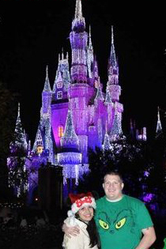
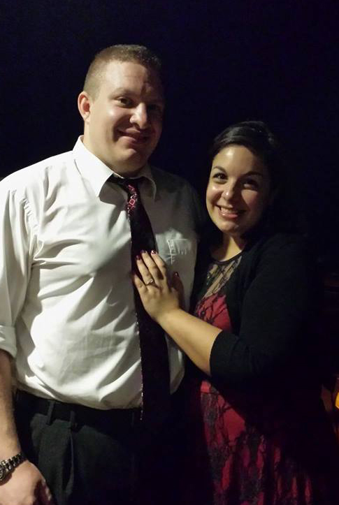

Callie grew up in Edmond, OK. She went to the University of Oklahoma and graduated with a Bachelor’s Degree in Journalism in 2009.
She was in the Pride of Oklahoma Marching Band for 3 years where she met some of her greatest friends. She wouldn’t trade the experience for anything.
Fall 2009 Callie moved to Orlando, FL where she started her college program at Walt Disney World® Resort.
She’s currently working towards a second Bachelor’s Degree in Web Design and Development from Full Sail University.
Grant grew up in Plano, TX. He played football in High School, which he really enjoyed. January 2010 Grant moved to Orlando, FL to begin his Disney College Program at Walt Disney World® Resort.
In June of 2010 Grant graduated from Le Cordon Bleu of Dallas. He continued to work full time at Disney.
He’s had the opportunity to work at many different restaurants, but his favorite experience was being a part of the reopening team of the California Grill in 2013.
Callie & Grant met in 2010 at Cinderella’s Royal Table inside Cinderella Castle at Magic Kingdom. Their first encounter was in January of 2010 when Callie thought Grant was basically a huge jerk.
A few months passed and a seater told everyone Callie thought Grant was cute (which was true, of course). Eventually, Grant heard the gossip as well and asked Callie out. A week later they went on their first date in August 2010.
They’ve gone on quite a few more dates since then. They love to stay at home with their dogs Kingsley and Thor, and go check out new restaurants and breweries.
On December 8th Callie & Grant embarked on the Disney Dream for a 4-night cruise to the Bahamas. This was their joint Christmas present for each other for 2013 and they were both very much looking forward to it.
On the 3rd night of the Cruise they ate at Palo, a fine dining Italian restaurant on one of the highest decks. After an amazing dinner, they went out on the private balcony to look out on Nassau. Grant mentioned that they had gone on a lot of adventures. He then asked if Callie wanted to go on adventures with him for the rest of her life. She turned around and he was on one knee asking her to marry him. She said, “REALLY?!” then “yes, of course!”
